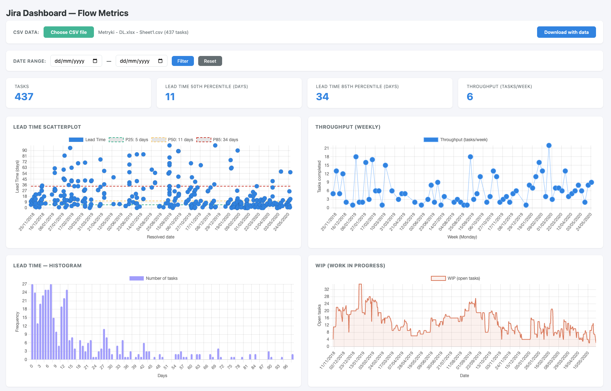
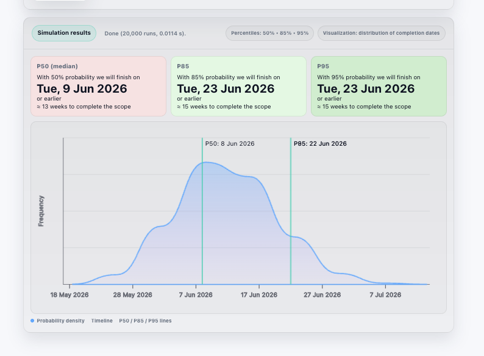
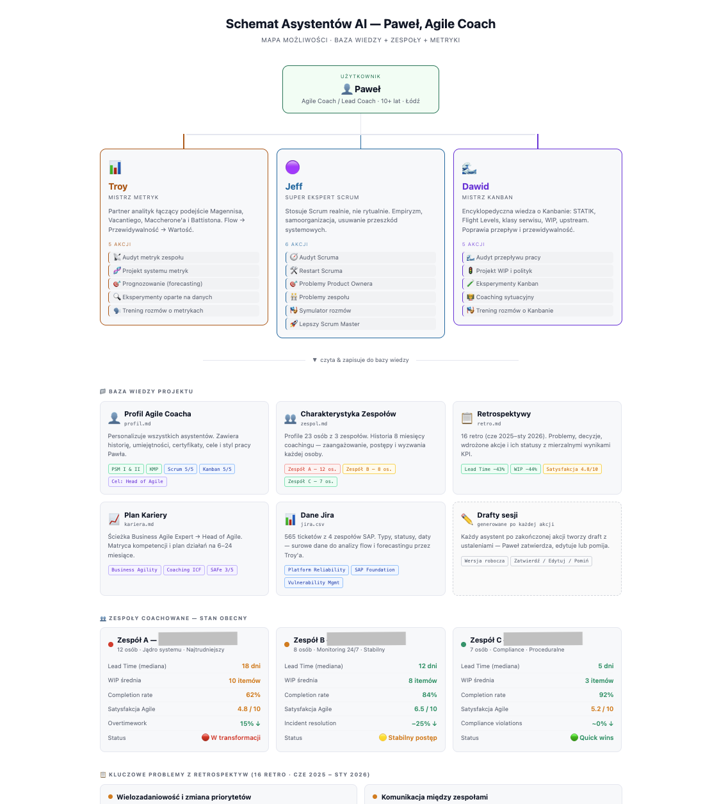
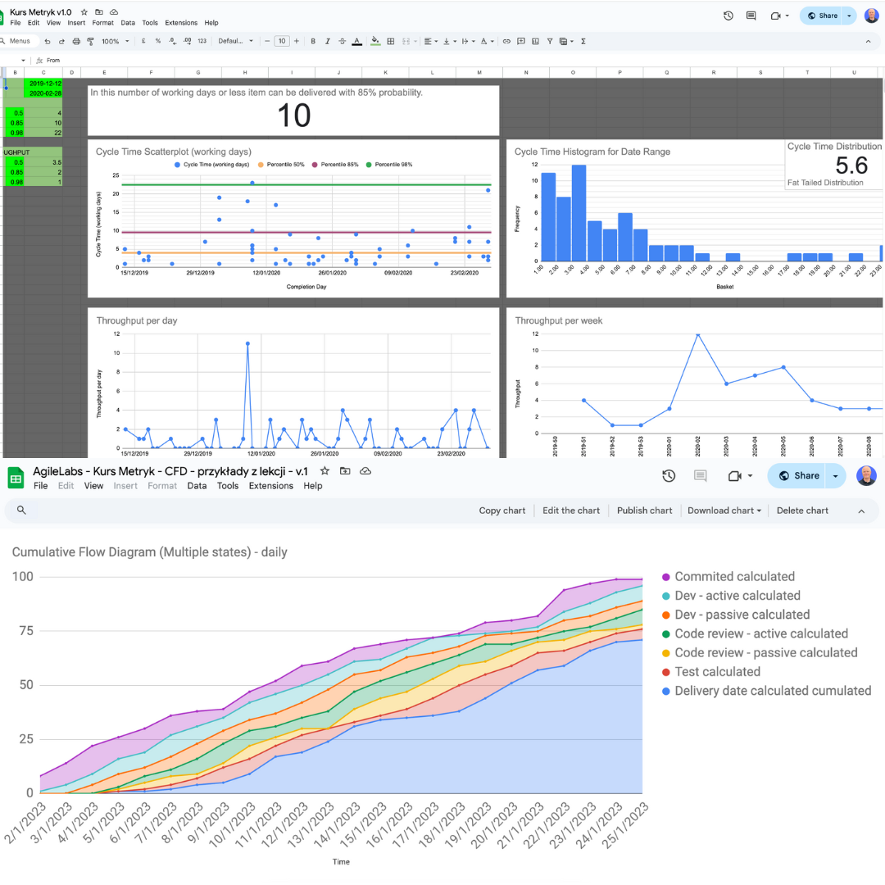
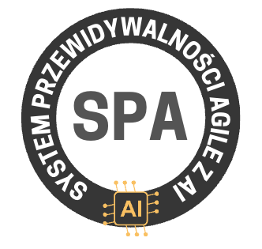

SPA: System Przewidywalności Agile z AI.
Budujesz system metrykowy z asystentem AI w 4 tygodnie.
Zamiast zgadywać, pokazujesz dane, ryzyka i realny termin dowiezienia.
14 dni gwarancji zwrotu · Faktura VAT
Biznes pyta o termin.
Zanim tu trafiłeś, pewnie próbowałeś kilku rzeczy. I pewnie żadna nie dała Ci tego, czego szukasz.
Problem nie w Tobie. Problem w tym, że nikt nie pokazał Ci, jak połączyć wykorzystanie AI w jeden działający system.
Chcesz to zmienić?
Zobacz pakietySamo AI nie daje przewidywalności. Potrzebujesz jeszcze metryk, danych i sposobu pracy.
Dostajesz ładne liczby, których nie umiesz obronić. AI daje odpowiedź, ale skąd wiesz, czy ma sens?
Za pół roku AI w Jirze, Confluence, Azure będzie standardem. Ci, którzy już to rozumieją, będą prowadzić rozmowy. Reszta będzie słuchać.
Wiesz co mierzyć. AI przyspiesza analizę. Rozmawiasz z biznesem faktami. Masz przewagę, której inni nie mają.
Kurs Metryk, 120+ lekcji. Cycle Time, Throughput, Monte Carlo. Fundament, bez którego AI nie pomoże.
Asystent AI, dashboard, prompty. Wrzucasz dane z Jiry, dostajesz analizę, prognozy i raporty dla biznesu.
Jira + AI połączone. Alerty, prognozy, raporty. Ty podejmujesz decyzje, AI przygotowuje dane.
Każdy filar działa sam. Razem dają przewidywalność.
120+ lekcji wideo. Fundament: Cycle Time, Throughput, Monte Carlo, CFD, WIP Age. We własnym tempie.
Budujesz krok po kroku. Wyciąga dane z Jiry, generuje prognozy, pomaga w rozmowie z biznesem. Twój, dopasowany do zespołu.
Budujesz swoje dashboardy, które są używane przez zespół i biznes. Gotowe w kilka minut.
Łączysz AI z narzędziami, które już masz. Jira, Confluence, Rovo od Atlassiana. Automatyczne alerty i prognozy.
„Nie znam się na AI."
Fakt: Nie piszesz kodu. Konfigurujesz, promptujesz, karmisz danymi. Jeśli umiesz eksportować CSV z Jiry, dasz radę. Zaczynamy od początku. Krok po kroku.
„Mam już certyfikaty i nic się nie zmieniło."
Fakt: SPA to nie certyfikat. Budujesz system z Twoimi danymi. Po każdej lekcji masz coś konkretnego do wdrożenia, nie papier na ścianę.
„Mój zespół nie chce zmian."
Fakt: Nie musisz przekonywać zespołu. Zaczynasz sam, z własnymi danymi. Kiedy pokażesz wyniki, rozmowa się zmieni.
„Nie mam czasu."
Fakt: To inwestycja, która szybko się zwraca. Mniej ręcznego grzebania w danych, mniej zgadywania, więcej konkretnych odpowiedzi i efektywniejsza praca z zespołem i biznesem.
Co tydzień nowe umiejętności. Z każdą chwilą lepiej działający system.
Modele AI w codziennej pracy i myślenie AI-first. Budujesz profil swojej roli (SM/AC/PM) i system informacji o zespole i projekcie. Pierwsza metryka dzięki AI.
Efekt: AI zna Twój kontekst + pierwsza metrykaBudujesz zespół asystentów AI, każdy z własnym zadaniem. Praca z danymi z Jiry za pomocą plików, pierwsze analizy, metryki i odpowiedź na „na kiedy to będzie". System pracy asystentów z metrykami.
Efekt: zespół asystentów + analizy z Twoich danychSystem pracy z metrykami dzięki AI. Prognozowanie i przewidywalność projektów. Budujesz własne dashboardy metrykowe. Jak wdrożyć metryki w zespole i biznesie dzięki wsparciu AI.
Efekt: dashboardy + prognozy + plan wdrożeniaIntegracja Jiry z AI. Zaawansowana praca z metrykami i danymi. Plan działania i wykorzystywania systemu w Twoim kontekście.
Efekt: zintegrowany system + Twój plan działaniaDane z Jiry, raporty, Agenci, automatyzacje. Rovo jako wirtualny współpracownik w codziennej pracy.
Narzędzia przydatne w pracy SM/AC/PM. Ty mówisz co chcesz, AI koduje.
Nie uczysz się „o AI". Budujesz asystenta, dashboard i narzędzia, które pracują z Twoimi danymi.



Wrzucasz dane z Jiry do AI i od razu widzisz, co spowalnia zespół, gdzie rośnie ryzyko i co warto omówić z biznesem. Zamiast zgadywać, pracujesz na konkretach.
Z danych z Jiry tworzysz tygodniowy update dla biznesu w 5 minut. Bez agile'owego żargonu, za to z jasnym statusem, ryzykiem i rekomendacją.
Wykresy i metryki zamieniasz na prosty język, który rozumie zespół i biznes. Dzięki temu łatwiej wyjaśnisz, co się dzieje i co trzeba zrobić dalej.
Krok po kroku budujesz własnego asystenta AI z wiedzą o metrykach Twojego zespołu. Pytasz go, co się zmieniło, co powinno Cię niepokoić i na co zwrócić uwagę.
Sprawdzasz scenariusze przed podjęciem decyzji: co się stanie, gdy ograniczycie WIP, zmienicie priorytety albo dojdą nowe tematy. AI pomaga policzyć wpływ i przygotować komunikat do biznesu.
Solidne fundamenty metryk procesowych. Realizujesz we własnym tempie, wracasz do lekcji kiedy chcesz.

Powitanie, strategia nauki, wymagania i podstawowe pojęcia
Wprowadzenie do metryk, definicje, zbieranie danych, statystyka i błędy poznawcze
Przepustowość systemu, wykresy, czytanie metryk, zastosowanie w Scrumie i prognozowaniu
Definicje, wykresy, histogramy, interpretacja danych i praktyczne zastosowanie
Flow, system Pull, tworzenie CFD, czytanie diagramów i wzorce
Wprowadzenie do prawa, działanie mechanizmu i prognozowanie
Definicja, metryki, wykresy i praktyczne stosowanie na co dzień
Dobre praktyki, błędy, wdrażanie w organizacjach i zespołach, narzędzia
Estymacja, prognozowanie z Cycle Time i symulacja Monte Carlo
Metryki oparte na Story Pointach
Zastosowanie metryk w kontekście Scrum
Nave, PaceMkr i inne narzędzia do metryk w Jirze
Dodatkowe nagrania pogłębiające tematy z kursu
Praktyczne sesje łączące metryki z narzędziami AI
Wszystko, żeby zbudować Twój system, który działa. Dostęp na 12 miesięcy.

„Kurs pozwolił mi pracować z danymi a nie z 'wydaje mi się'. Po głębszym użytkowaniu dał mi przewidywalność do której dążyłem."
„Kurs otworzył mnie na dyskusje i szczere pojęcie metryk. Fajnie jak w zespole przychodzę z omówieniem po co zbieramy daną metrykę i wtedy jest takie 'Aaaaa'."
„Wykorzystuję metryki by wspierać decyzyjność w zespole. Teraz wiem jak je robić w excelu, oraz jak je przedstawiać i omawiać."
„Ten kurs usystematyzował i wyklarował wiele obszarów. Bardzo przydatne były przykłady z życia, konkretne, praktyczne zastosowanie metryk."
„Jestem humanistką a poznawanie nowych narzędzi jest dla mnie trudne. Moje wątpliwości szybko rozpłynęły się w powietrzu. Każde zagadnienie wytłumaczone jest w prosty i zrozumiały sposób."
„Kurs Metryk zapewnia fajny i przejrzysty podział na lekcje. Po kursie mam świadomość wielu możliwości jakie dają metryki."
Od ponad 10 lat pracuję z zespołami IT jako Scrum Master i Agile Coach. I jednego nauczyłem się boleśnie: bez danych gadasz z biznesem po omacku. Twoje rekomendacje przepadają w polityce firmy, bo nie masz czym ich podeprzeć.
Stworzyłem Kurs Metryk, bo sam przeszedłem tę drogę. Rozproszone materiały, sprzeczne porady, „poszukaj na forach". Zajęło mi miesiące, żeby to ułożyć. Ten kurs powstał, żebyś Ty nie musiał tego powtarzać.
SPA to następny krok. Bo AI już jest. Pytanie brzmi: czy będziesz jednym z tych, którzy wiedzą jak go połączyć z codzienną pracą, czy jednym z tych, którzy mówią „fajne, ale nie wiem jak zacząć".
Jestem Akredytowanym Trenerem Kanban University, twórcą kanału na YouTube z warsztatami i wywiadami oraz organizatorem spotkań Behind the Product.
Policzmy razem.
Cena przedsprzedażowa. Po zamknięciu okna cena wzrośnie.
Kurs wideo, bez AI i sesji live. We własnym tempie.
Kurs Metryk + asystent AI + dashboardy + Jira/Rovo + 4 tygodnie live.
Wszystko z SPA + indywidualne sesje 1:1.
Cena przedsprzedażowa obowiązuje do 18.03.2026. Po tym terminie cena wzrośnie.
Ułatwiamy zakupy firmowe i szkolenia grupowe.
Napisz na pawel@agilelabs.pl. Przygotujemy ofertę dopasowaną do Twojego zespołu.
Testujesz bez ryzyka. Jeśli w ciągu 14 dni od startu programu uznasz, że SPA nie jest tym, czego szukasz, oddaję 100% pieniędzy. Jeden mail, zero pytań, zwrot w 3 dni robocze. Proste.
4 tygodnie. Twoje dane. Asystent AI, dashboard, system. Na koniec masz odpowiedzi oparte na danych, nie kolejny certyfikat na ścianę.
Dołącz do przedsprzedażyPS. Jeden dzień konsultingu w temacie metryk i Agile to 2 400+ PLN na rynku. Za 1 999 PLN dostajesz 4 tygodnie live, kurs z 120+ lekcjami, asystenta AI, dashboard i bank promptów. Plus 14 dni gwarancji, gdyby coś nie grało.